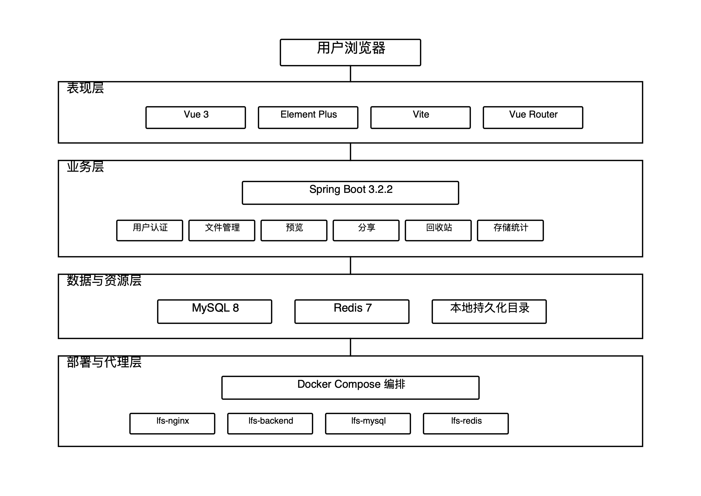

系统总体架构
SYSTEM ARCHITECTURE
05
/
13
图 3.1 · 系统总体架构图
Layered Architecture

表现层
Vue 3 SPA 管理多个视图，负责交互与页面路由
业务层
Spring Boot 提供 REST 接口，集中处理鉴权与业务逻辑
数据层
MySQL 存业务元数据，Redis 存 Token 黑名单与临时状态
部署层
本课题重点
Nginx 作为容器化后的统一入口，同时负责静态资源与反向代理
文件处理层
Aspose / PDFBox / JAVE 负责 Office、PDF 与音视频多格式预览